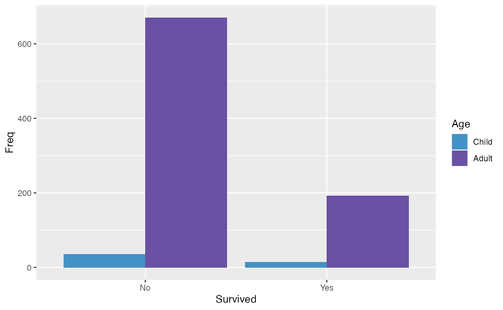
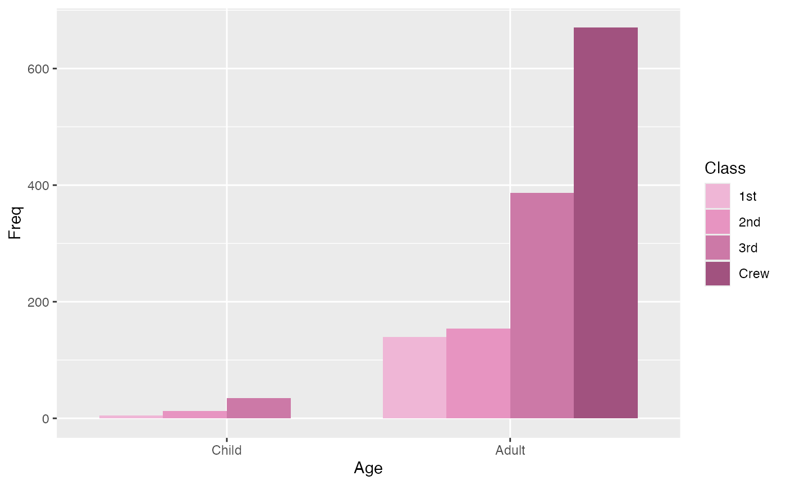
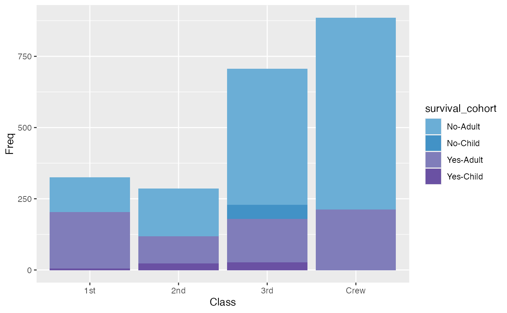

Titanic Data Example
Erin Dahl
May 20, 2022
Source:vignettes/titanic_data_example.Rmd
titanic_data_example.RmdApply the microshades palette to Titanic data
To apply a microshades palette color to a plot, use scale_fill_manual().
The following examples use the Titanic dataset available to show how to apply the color palettes to non-microbiome data.
This first example examines the number of male and female passengers, and the class of the traveler is expressed through color shades.
library(microshades)
library(dplyr)
library(ggplot2)
titanic_data <- as.data.frame(Titanic)
ggplot(titanic_data, aes(x=Sex, y= Freq, fill = Class)) +
geom_col() +
geom_bar(stat="identity") +
scale_fill_manual(values = microshades_palette("micro_cvd_turquoise"))
This examples compares the number of individuals who survived and how many were Adults vs. Children.
colors <- c(rev(microshades_palette("micro_blue"))[1], rev(microshades_palette("micro_purple"))[1])
ggplot(titanic_data, aes(x=Survived, y= Freq, fill = Age)) +
geom_bar(position=position_dodge(), stat="identity") +
scale_fill_manual(values = colors )
This plot shows the number of Child vs. Adult passengers, and their respective classes.
ggplot(titanic_data, aes(x=Age, y= Freq, fill = Class)) +
geom_bar(position=position_dodge(), stat="identity") +
scale_fill_manual(values = microshades_palette("micro_cvd_purple"))
For the plot below, a combination variable that combines Survival and Age categories is created and called the survival cohort. This variable allows for a more detailed coloring of the plot.
titanic_mod <- titanic_data %>% mutate(survival_cohort = paste(Survived, Age, sep = "-"))
colors <-c(microshades_palette("micro_blue", 2, lightest = FALSE),
microshades_palette("micro_purple", 2, lightest = FALSE))
ggplot(titanic_mod, aes(x=Class, y= Freq, fill = survival_cohort)) +
geom_col() +
geom_bar(stat="identity") +
scale_fill_manual(values = colors)